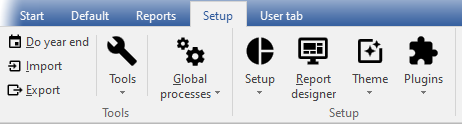

Setup ribbon
In osFinancials5, the Setup ribbon tab provides access to several key features, including the Setup, Tools, Global processes, Themes, and Plugins. These features are designed to enable you to customize your Set of Books and streamline your financial processes.
By accessing the Setup option, you can configure your Set of Books to meet the unique requirements of your business, including setting up your company information, document settings, reporting groups, accounts, and taxes. The Tools option allows you to access various tools that can help you manage your data, including backup and restore options, data import and export features, and more. The Global processes option provides access to batch processing functions, such as posting documents, running reports, and updating stock levels. The Themes option enables you to customize the appearance of your accounting system, while the Plugins option allows you to add additional features and functionality to your system. With the Setup ribbon tab, you can easily manage all aspects of your accounting system and ensure that your financial data is accurate, up-to-date, and organized.
The Setup ribbon tab is used to access the Setup, Tools, Global processes, Themes and Plugins.

The following nine options (9) options are available:
- Do year end - This option allows you to close off all nominal accounts (income and expense accounts) and transfer their balances for the current financial year to the Retained Income/Earnings account. The start date and the reporting dates for the financial year will also be created for the new financial year.
- Import - Import accounts, debtors, creditors, documents and stock from specific file formats.
- Export - Export accounts, debtors, creditors, documents, stock and posted batches to specific file formats.
- Tools - Access the following five (5) options:
- Blockchain - By default not activated.

- Data integrity check - This option allows you to run a check on the integrity of your data and generate a corresponding report. By selecting this option, you can verify that your data is accurate and free of errors that could cause issues in your Set of Books. Once the check is complete, you can print the "Data integrity check report" to review the results and take any necessary corrective action.
- Customise language - Customise (edit, change and translate) language files. This option allows you to edit, change, and translate language files. By selecting this option, you can customise the language used in osFinancials to better suit your needs or preferences. This might involve making changes to existing language files, translating the osFinancials into a different language, or creating entirely new language files.
- Close active forms - This option allows you to close any open forms or screens within the Set of Books, such as the Documents, Debtors, Creditors, or Stock items screens. By selecting this option, you can quickly close all active forms.
- Activate plugins - By default, no plugins is activated when osFinancials is installed. This option allows you to activate / deactivate all plugins, registered plugins or specific plugins. The activated plugins will be available from the Plugins menu (on the Setup ribbon).
- Global processes - The following four (4) options are available:
- Clear / Reset - This option allows you to clear all transactions and balances in a Set of Books. By selecting this option, you will effectively reset the Set of Books, deleting all transactions and balances. However, you also have the option to retain all documents and set them to unposted status.
- Copy from a Set of Books - This option allows allows you to copy data from a chosen Set of Books into the currently active (open) Set of Books. By selecting this option, all the existing data in the active Set of Books will be replaced with the data from the selected Set of Books.
- Reverse posted batch / document - This feature enables you to reverse or cancel transactions in posted batches (journals) and documents.
- Reverse posted batch (Journal) - This feature allows you to cancel transactions that were processed in batches (journals) which have already been updated (posted) to the ledger. By selecting this option, all the transactions that were previously updated (posted) to the ledger will be cancelled and removed from the transaction file.
The cancelled transactions will be automatically imported to the selected batch (journal). At this point, you have the option to either erase or delete the entire batch (journal). If you wish to keep the cancelled (reversed) batch, you can edit and correct the transactions, balance the batch, print the batch list, and post it to the ledger.
- Reverse posted document - This feature cancels the documents as well as any transactions that were generated by the documents (such as invoices and credit notes, purchases, and supplier returns) after they were updated (posted) to the ledger. The cancelled (reversed) document can then be accessed as an unposted document, which you can edit in the Documents section of the Default ribbon and then post (update) to the ledger. If you do not need to update (post) the document to the ledger, you may also choose to delete it using the Edit → Delete - Documents. option on the Default ribbon.
- Setup -
- Company info - Enter the company information (name, address telephone, fax numbers e-mail address) and registration numbers for the Company and VAT/GST/Sales Tax, if applicable.
- You also need to set the default tax method and output method for reports (to screen, printer, file, e-mail or fax).
- Load your logo or picture, which you wish to be displayed on the documents.
- Set the default currency format and date format in your Windows Operating System.
- Reporting dates - This option allows you to set the start date of your financial year and define the periods within it. By selecting this option, you can specify when your financial year begins and ends, as well as how it is divided into reporting periods. Additionally, you can close a specific period or year for posting transactions to the ledger, effectively preventing any further changes or updates to that time period. This can be useful for ensuring the accuracy and integrity of your financial records.
- Documents setup - Settings for sales documents (i.e. invoices, credit notes and quotes) and purchase documents (i.e. purchases, supplier returns and orders). Set the defaults for documents, such as the numbers, batch types, headings and messages and document layout files.
On the Statements setup tab, you may enter a global message to be printed on Debtor statements (Reports → Debtors → Outstanding (Reports ribbon).
- Accounts - Edit, Add or Delete General ledger accounts, Bank accounts and Tax accounts. Budget figures are also entered, edited or deleted for accounts.
|
|
Budget figures may also be processed in the Budgets option on the Reports ribbon. You may also view and analyse budget figures using the Pivot feature. |

- Groups - Set up to 2 Groups for ledger Accounts, Debtors, Creditors, Stock items and Documents for generating reports.
- Stock information - The following settings are available:
- Selling prices - Enter (edit) the descriptions for up to 3 selling prices. You may set the default selling price 1 / 2 / 3 which will be used globally when processing documents.
- Cost of sales - Set the parameters for Cost of sales (account, batch type, whether you will be using average or latest cost).
- Documents setup - This also contains various settings when processing documents and/or working with stock.
- Unit size - Specify the unit descriptions and sizes to be displayed in stock item screens and on layout files.
- Tax classes - Create add, edit Tax classes (Account classes) to which you may select Input Tax codes, Output Tax codes, Sales, Cost of sales and Stock control accounts.
- Batch types - Create or delete batch types or journals in which you wish to enter transactions. Batch types also need to be linked to sales documents (i.e. invoices and credit notes) and purchase documents (i.e. purchases and supplier returns) on Setup Documents.
- Access control - Set the passwords, users and access to certain menus for each of your users.
- Salesperson - Add or remove any salespersons, which will be processing sales documents (i.e. invoices, credit notes and quotes) and purchase documents (i.e. purchases, supplier returns and orders) or cashiers operating Point-of-Sale.
- Financial categories - Link your Ledger Account groups to Assets, Capital, Expenses, Income or Liabilities.
- System parameters - Select the indicators for debit and credit, number of decimals to be displayed on reports and documents as well as the number of decimals to be stored. You may also select to display the default system currency symbol.
- Internet - This option enables you to configure your Internet settings so that you can send reports, statements, and lists to any person or organization via email. To do this, you will need to specify your email's outgoing mail server as set up by your Internet Service Provider on your computer system.
- Countries - Add and manage the ISO CODE2 and ISO CODE3 as well as ICL CODES for each country. See Country codes.
- Currencies - You may add / edit currencies and the exchange rates. When processing documents, you may select the currency. This will automatically calculate the prices for that currency.
- Point-of-Sale - Set the Point-of-Sale parameters, configure printers, peripherals, etc.
- Workflow Setup -
|
|
Workflow plugin - Manual - Shop - Licence : Once-off - The workflow plugin allows you to record the steps or processes of a task. The different screens osFinancials can be created such as the stock screen or debtors / creditors and documents. This allows you to record almost every conceivable process (steps) in a task, visualize and gain instant insight wherever you are in the process and what steps have been taken before. A step can be assigned to a user and an administrator can see all workflow steps not done (outstanding steps) and possibly assign a task to a user. Outstanding transitions that are possible after showing the step. Workflow is a knowledge system that can gain your knowledge or just to share it with others. This allows you to formalize your business and capture the steps in an automated system. Another advantage is that you retain a better overview of your running processes and you have historical data at hand. |

- Printer - Select the default settings for printing reports and documents.
- Report designer - Edit existing reports and layout files for documents. You may also create and edit your own reports and layout files.
- Themes - This option enables you to customize the appearance of your accounting system, By default, osFinancials5 is installed in the "Classic" theme (default theme). You may select the "Material Blue, Glass, Silver, Soft-blue" or "VS2010"theme to be displayed in the program. You may also add your own favourite background pictures.
|
|
If you choose to use the "Classic" or "VS2010" theme, the icons that will be displayed will be those from the Classic theme icon set. However, if you choose to use one of the following themes: "Blue, Glass, Silver", or "Soft-blue", a different set of icons in SVG file format will be displayed in Navy blue colour. On the other hand, if you select the "Material" theme, the same set of icons will be displayed but in the colour Black. |

|
|
The screenshots in this documentation are captured using the "Material" theme. |
- Plugins - By default, no plugins are listed on this menu. Only activated plugins will be listed.
|
|
Most of these plugins are licenced under commercial licences. You need to purchase a licence on which a registration code and instructions will be mailed to you to unlock the full features of these plugins. Multi-User and Plugins need to be registered in Plugins → Tools → Register Plugins on the Setup ribbon. |